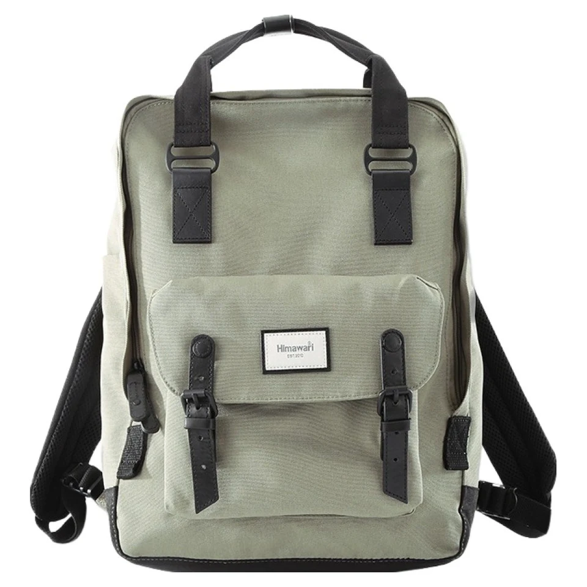

도시락 용기는 넣는 방향과 꺼내는 방향을 함께

출근 짐은 책과 파일처럼 세우는 물건이 많습니다. 그 사이에 도시락 용기가 더해지면 바닥을 놓을 자리와 꺼낼 방향이 달라집니다. 비어 보이는 틈을 찾는 것에서 시작하기보다 닫힌 용기가 어떤 모습으로 들어가고 나오는지 살펴봅니다. 음식의 보관 조건은 따로 확인하고, 여기서는 실제 용기와 다른 소지품을 나누는 배치에 초점을 둡니다.
음식을 담기 전에 빈 용기로
뚜껑과 잠금 부품을 모두 닫은 빈 용기를 준비합니다. 손잡이나 돌출부도 포함한 상태로 가방 입구를 통과하는지 봅니다. 안쪽에 놓일 공간이 있어도 입구에서 기울여야 하는 구성인지 확인할 수 있습니다. 내용물을 넣은 뒤 방향을 억지로 바꾸기보다 비어 있을 때 이동할 모양을 먼저 정하면 됩니다. 용기를 여러 개 사용하는 날에는 각각과 전체 묶음의 형태를 함께 살펴봅니다.
운반 주머니나 별도 케이스를 사용한다면 그 상태까지 포함해 봅니다. 용기만 들어갔다고 준비가 끝났다고 판단하면 주머니 손잡이나 여밈이 추가되었을 때 달라질 수 있습니다. 꺼낼 때 잡을 면이 어디인지도 정합니다. 용기의 잠금 부품을 손잡이처럼 사용하기보다 제조사가 안내하는 방식으로 들고 놓습니다. 빈 용기로 먼저 보는 과정은 실제 제품을 현재 짐과 비교하는 준비입니다.
바닥에는 무엇이 놓이는지 확인합니다. 둥근 충전기나 작은 파우치 위에 얹히면 한쪽이 들릴 수 있습니다. 평평한 지지 면을 마련하고 다른 물건이 그 자리에 움직여 들어오는지 살펴봅니다. 가방이 서 있는 상태만 보지 않고 내려놓은 뒤 여는 과정에서도 위치가 달라지는지 봅니다. 실제 사용 중에 정한 방향을 유지하기 어렵다면 용기 운반에 맞는 별도 묶음을 선택할 수 있습니다.
여밈의 확인과 누수의 기대를 나눈다
뚜껑이 있다는 이유만으로 모든 움직임에서 새지 않는다고 판단하지 않습니다. 용기의 밀폐와 운반 안내를 읽고 그 범위에서 준비합니다. 가방의 원단이나 생활방수 표기는 용기 여밈의 상태를 대신하지 않습니다. 전자기기와 종이 자료를 같은 구성에 넣을 계획이라면 서로 직접 맞닿지 않는 배치를 정합니다. 분리용 소품을 고를 때에도 실제 제품이 안내하는 용도를 확인합니다.
주변 책이나 단단한 물건이 용기를 위에서 누르는지 봅니다. 입구를 닫기 위해 뚜껑을 계속 압박해야 한다면 짐의 위치와 양을 다시 정합니다. 용기 위에 업무 자료를 쌓아 무게로 고정하려고 하지 않습니다. 가방을 들어 이동할 때의 배치와 내려놓고 꺼낼 때의 배치가 모두 필요한 이유입니다. 어떤 방향으로도 무조건 적합하다는 판단 대신 자신의 구성에서 불편한 지점을 찾습니다.
Himawari No.1010과 도시락 준비를 함께 생각할 때에는 업무 자료의 자리와 용기의 자리를 각각 정합니다. 평소 짐을 넣은 뒤 빈 용기의 운반 묶음을 함께 놓아봅니다. 들어가는지에 이어 점심시간에 꺼낼 수 있는지도 확인합니다. 가방 전체를 책상 위에 펼치지 않아도 용기를 받쳐 꺼낼 동작이 이어지는지가 실제 배치를 고를 기준이 됩니다.

음식에 보냉이나 다른 보관 조건이 필요한지는 음식과 용기에 맞는 공식 안내에서 확인합니다. 배치를 잘 만들었다는 사실만으로 보관 조건이 충족되었다고 판단하지 않습니다. 필요한 운반 구성이 갖춰지지 않으면 도시락 계획이나 이동 방법을 바꿀 수 있습니다. 가방의 남는 공간이 있다는 이유로 필요한 준비를 생략하지 않고 어떤 조건을 먼저 정해야 할지 읽으면 됩니다.
점심시간에 꺼낼 순서
가방을 안정된 자리에 놓고 용기가 들어 있는 묶음을 꺼냅니다. 파일이나 기기를 임시로 어디에 둘지까지 정해야 한다면 그 공간도 확보합니다. 용기를 꺼내는 순간 가방이 한쪽으로 기울거나 남은 물건이 흘러나오지 않는지 볼 수 있습니다. 공간이 좁은 자리에서는 필요한 묶음만 꺼낼 수 있는 준비가 편합니다. 함께 사용할 식사 소품도 다른 자료와 섞이지 않는 위치로 둡니다.
빈 용기가 되었어도 사용한 뒤에는 출발 때와 상태가 다릅니다. 겉면과 뚜껑 상태를 확인하고 사용하는 용기의 안내에 맞춰 정리합니다. 준비한 운반 주머니로 돌아갈 상태인지 봅니다. 작은 잠금 부품이나 식사 소품이 따로 있다면 각자 제자리로 둡니다. 같은 빈 용기라는 이유로 아침에 시험한 상태와 똑같다고 생각하지 않고 지금의 묶음을 기준으로 챙깁니다.
귀가 후에는 용기와 운반 주머니를 먼저 꺼냅니다. 각 관리 안내에 맞춰 정리하고 가방 안쪽에도 달라진 흔적이나 물기가 있는지 봅니다. 다음날 필요한 업무 자료는 평소 자리로 돌려놓습니다. 도시락 묶음을 닫힌 가방에 남겨두지 않으면 내일 어떤 구성을 다시 준비할지 구별됩니다. 깨끗하고 마른 상태로 돌아온 이동 소품을 기준으로 다음 배치를 생각하면 됩니다.
다른 크기의 용기를 쓰거나 용기 수가 늘어난 날에는 이전 배치를 그대로 가져오지 않고 빈 상태에서 다시 봅니다. 뚜껑 방향과 잡을 면, 운반 소품까지 같아졌는지 확인합니다. 바뀐 구성에서도 가방 여밈이 자연스럽게 닫히고 꺼낼 순서가 이어지는지 살펴봅니다. 용기에 맞춘 자리가 생기지 않는다면 별도 운반을 선택할 수 있습니다. 도시락을 챙기는 목적과 백팩을 채우는 목표를 같은 기준으로 둘 필요는 없습니다.